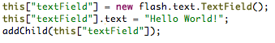

instance keyword is used to retrieve an object that has already been created.
In this example you will learn about how to use the instance keyword.
instance
The
In the example above, we first create a
This is because all top level objects and top level calls to
flash.text.TextField object,
then target it to set the text property on it, and finally we target it once more to add it to the stage.
Note: When we target objects the
this keyword is required.
This is because all top level objects and top level calls to
addChild become properties of the org.fxml.Application object.
Compare the example above with the ActionScript 3 example below.
The keyword
this refers to the org.fxml.Application object.
AS3:

The
instance keyword can be used to target nested objects as well.
In the second example, we first create a
Note: It is important to note that targeting an object is only possible after the entire XML node has finished parsing. This can be a hindrance and may cause you to alter the construction of your objects.
Consider the Nested instance example above: During the construction of the
flash.display.Sprite object, give it a name of "container",
then create a flash.text.TextField object give it a name of "textField" and add it as a child to the "container".
Finally, we target the flash.text.TextField using dot notation (this.container.textField)
and set the text property to "Hello World again!". Note that in this example we targeted the elements by their
name property. This is only possible for objects that extend flash.display.DisplayObject
and have been added to the stage. All other objects must be referenced by the name of the XML node assigned
to them (as in the first example).
Note: It is important to note that targeting an object is only possible after the entire XML node has finished parsing. This can be a hindrance and may cause you to alter the construction of your objects.
Consider the Nested instance example above: During the construction of the
flash.text.TextField we will not have
access to the flash.display.Sprite. This is due to recursion. The parser will work from the inside out,
which means that as it begins creating objects, it will finish the flash.text.TextField before it finishes the
flash.display.Sprite. This means that the flash.text.TextField object can not access the
flash.display.Sprite (it's parent) until the entire block has finished. This may take some time to
get the hang of, however, when in doubt, create your objects independently of each other (as opposed to nested objects) and
target them as top level objects to piece together your application.